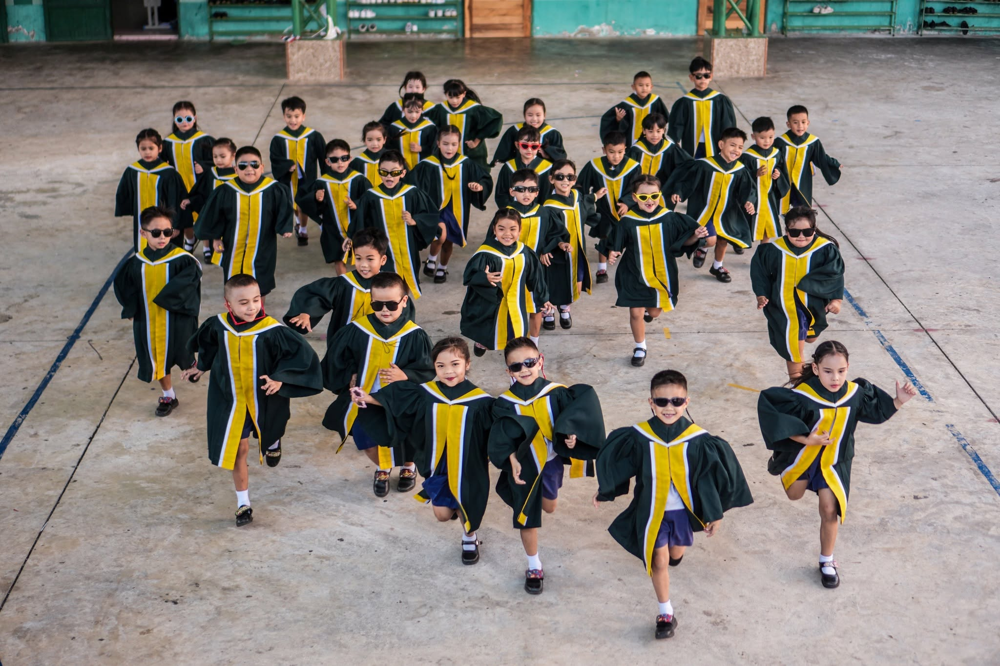

โรงเรียนบัวใหญ่วิทยา โรงเรียนเอกชนแห่งแรกของอำเภอบัวใหญ่ จังหวัดนครราชสีมา ยืนหยัดเคียงคู่ชุมชนมากว่า 85 ปี บ่มเพาะเยาวชนให้เป็นทั้งคนเก่งและคนดี
โรงเรียนบัวใหญ่วิทยา เป็นโรงเรียนเอกชนแห่งแรกที่ก่อตั้งขึ้นในอำเภอบัวใหญ่ จังหวัดนครราชสีมา เป็นโรงเรียนเอกชนประเภทสามัญศึกษา สังกัดสำนักงานคณะกรรมการการศึกษาเอกชน สำนักงานปลัดกระทรวงศึกษาธิการ
ได้รับอนุญาตให้จัดตั้งขึ้นเมื่อ วันที่ 20 สิงหาคม พ.ศ. 2484 นับเป็นสถานศึกษาที่มั่นคง ยืนหยัดเคียงคู่อำเภอบัวใหญ่และเป็นที่ยอมรับของชุมชนมาช้านาน

หลักคิดที่หล่อหลอมการจัดการศึกษาของโรงเรียนบัวใหญ่วิทยา เพื่อสร้างเยาวชนที่สมบูรณ์ทั้งความรู้และคุณธรรม
“คุณธรรม นำความรู้”
มุ่งปลูกฝังให้ผู้เรียนเป็นคนดีก่อนเป็นคนเก่ง ใช้คุณธรรมเป็นรากฐานนำทางการแสวงหาความรู้ตลอดชีวิต
เป็นสถานศึกษาเอกชนชั้นนำของอำเภอบัวใหญ่ ที่จัดการศึกษาอย่างมีคุณภาพ ผู้เรียนมีคุณธรรม ก้าวทันการเปลี่ยนแปลงของโลก และอยู่ร่วมกับชุมชนได้อย่างมีความสุข
จัดการเรียนรู้ที่เน้นผู้เรียนเป็นสำคัญ พัฒนาผู้เรียนรอบด้าน ส่งเสริมคุณธรรมจริยธรรม พัฒนาครูสู่มืออาชีพ และสร้างความร่วมมือกับผู้ปกครองและชุมชน
ดูแลผู้เรียนต่อเนื่องในทุกช่วงวัย ด้วยหลักสูตรครบ 8 กลุ่มสาระการเรียนรู้ตามมาตรฐานกระทรวงศึกษาธิการ
อ่าน เขียน สื่อสาร และรักภาษาไทย
คิดวิเคราะห์อย่างเป็นระบบ
ทดลอง ค้นคว้า เท่าทันเทคโนโลยี
เข้าใจสังคมและความเป็นพลเมือง
สุขภาพดี กีฬาเด่น จิตใจแข็งแรง
สร้างสรรค์ ดนตรี ทัศนศิลป์ นาฏศิลป์
ทักษะชีวิตและการทำงาน
สื่อสารภาษาอังกฤษอย่างมั่นใจ
ผู้นำที่อุทิศตนเพื่อการศึกษาของบุตรหลานชาวบัวใหญ่ ด้วยหัวใจของความเป็นครู
ข่าวประชาสัมพันธ์ ภาพกิจกรรม และความเคลื่อนไหวล่าสุด อัปเดตสดตรงจากเฟซบุ๊กแฟนเพจของโรงเรียน
ไม่พลาดทุกข่าวสาร กิจกรรม และประกาศสำคัญ เรารวบรวมไว้ให้แล้วที่เดียว — อัปเดตอัตโนมัติตามโพสต์ล่าสุดบนเพจ
ฟีดเฟซบุ๊กจะแสดงเมื่อเปิดเว็บไซต์บนโดเมนจริง
เปิดเพจเฟซบุ๊กตั้งแต่ระดับเตรียมอนุบาล จนถึงมัธยมศึกษาปีที่ 3 ก้าวแรกของบุตรหลานท่านสู่การเรียนรู้ที่อบอุ่นและมีคุณภาพ เริ่มต้นที่นี่
รวมเอกสารสำคัญสำหรับผู้ปกครองและนักเรียน ดาวน์โหลดได้สะดวกทุกที่ทุกเวลา
ยินดีต้อนรับผู้ปกครองและนักเรียนทุกท่าน สอบถามข้อมูลเพิ่มเติมได้ตามช่องทางด้านล่าง